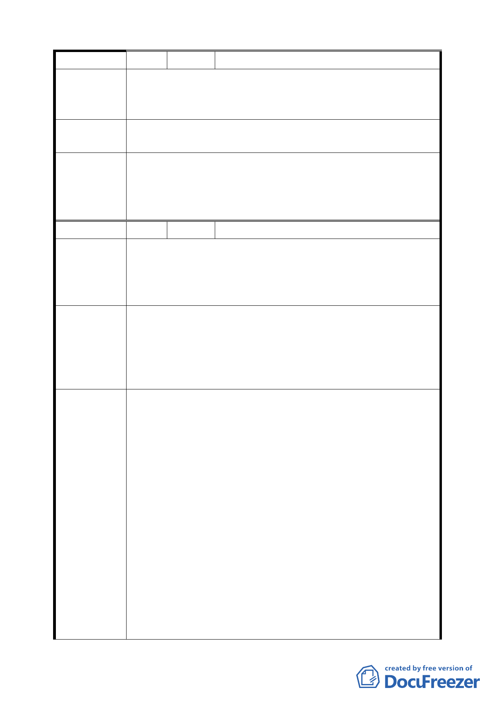

編 號 8 陳情人 許祥熙
土地標示：南港區經貿段 70、70-1 地號。
陳 情 理 由 1.重大工程並未依限完成。
2.商三土地原來就容許作多戶住宅使用。考量社會實際需求。
建 議 辦 法 1.將容積獎勵延長三年至 101 年 3 月 20 日。
2.允許 C5 得作住宅用地，讓地主有更多選擇。
1.延長第二期法定容積×5%之適用至 101 年 6 月 14 日，並取
委員會決議
消第三期時程獎勵規定。
2.同意發展局所提「為維持高品質商務機能，商業區不宜放
寬作住宅使用」，維持原公展計畫。
編 號 9 陳情人 闕狀崙等 2 人
土地標示：南港區經貿段 70、70-1 地號。
陳情理由
本案已將街廓編號 C4、C5 調整為商業區（供商務設施使用），
為達名實相符，應比照本市土地使用分區管制規則第三種商
業區之使用，不宜再做限制等除外規定。
1.建議比照商三土地使用分區管制規則有關規定，容積率為
560％、建蔽率為 65％。
建 議 辦 法 2.建議取消汽車停車空間依北市土地使用分區管制規則 1.8
倍留設規定。
3.建議配合容積移轉之需要，放寬街廓高度 60 公尺之限制。
1.同意發展局所提說明：「修訂台北市主要計畫商業區(通盤檢
討)計畫案」規定變更住宅區及商業區為商(特)區建築基地之
建蔽率及容積率維持不變，以及經貿園區原規劃構想容積率
係自 C10、C11 街廓 560%往 C6、C7 街廓遞減至 360%，隔
經貿二路對側之 C4、C5 街廓亦為 360%，本計畫區因係以
區段徵收方式整體開發，當時配地比例均已參酌各街廓之使
用強度計算負擔，故基於公平性原則，維持原公展規定容積
委 員會決 議 率為 360%。
2.同意發展局所提修正：「本計畫區停車空間及離街裝卸場設
置標準，應按「臺北市土地使用分區管制規則」之相關規定
辦理。C3 至 C11 及 C14 街廓之汽車停車空間依該管制規則
停車空間之 1.8 倍留設，惟得視交通衝擊影響情形，經交通
主管機關同意調整實際設置數量」。
3.同意陳情民眾所提建議，取消公展計畫中建物高度之管
制，回歸本市土地使用分區管制規則規定辦理。
22